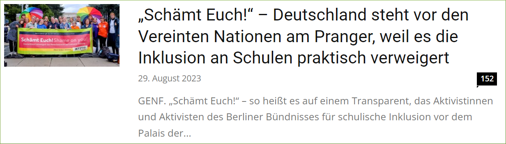

install.packages("rvest")
library(rvest)
1 Vorwort
TBA -
2 Einleitung
Mein wertgeschätzter Kollege Timo Lüke1 hat einst im Rahmen einer Medieninhaltsanalyse deutschsprachiger Printmedien (Lüke u. a. 2014) folgende Forschungsfragen aufgeworfen:
- Welches Verständnis von Inklusion wird in den deutschen meinungsführenden Medien kommuniziert?
- Welche Argumente für und gegen die Umsetzung von Inklusion werden genannt?
- Welche Fallbeispiele werden als Belege angeführt?
“Im Rahmen einer systematischen Inhaltsanalyse (Rössler, 2010) deutscher Printmedien untersuchen wir die öffentliche Berichterstattung zum Thema „Inklusion”. Dabei wollen wir verbreitete Definitionen, Argumente und Fallbeispiele systematisch erfassen. So sollen langfristig die Analyse des medialen Diskurses und in der Folge eine Versachlichung der kontroversen Debatte über Inklusion ermöglicht werden.” (Lüke u. a. 2014)
Erste Ergebnisse der Medieninhaltsanalyse sind in Form einer Posterpräsentation verfügbar (Lüke u. a. 2014) und ich erlaube mir die Darstellung des interessanten Posters (Abbildung 1).

3 Ziele
3.1 Allgemeine Zielsetzung
Ich möchte die Medieninhaltsanalyse von Lüke u. a. (2014) replizieren sowie erweitern und mich dabei auf die Textinhalte einer Online-Nachrichten- und Diskussionsseite für Lehrkräfte fokussieren, nämlich News4teachers (News4teachers 2022).
3.2 Zielsetzung mit R: Web-Scraping und Text-Mining
Ich möchte exemplarisch aufzeigen, wie die einzelnen Projektphasen der Medieninhaltsanalyse mit der Programmiersprache R umgesetzt werden können. Hierfür werden wir uns auf zwei wichtige Arbeitsschritte fokussieren:
Web-Scraping, also eine automatisierte Methode zum Extrahieren der Textinformationen von der Webseite News4teachers. Eine Einführung in das Thema Web-Scraping mit R bieten Wickham, Cetinkaya-Rundel, und Grolemund (2023, Kap. 25)2.
Text-Mining: Die mittels Web-Scraping gesammelten Textdaten sollen mit Methoden des Text-Minings analysiert werden. Methoden des Text-Minings fokussieren sich auf die Extraktion von nützlichen Informationen aus unstrukturierten Textdaten. Unstrukturierte Textdaten sind Texte, die nicht in einer festen Datenbankstruktur vorliegen, also z.B. Textinhalte von Webseiten. Mit Methoden des Text-Minings kann auch der sentimentale Ton eines Textinhalts bzw. die im Text vermittelte subjektive Meinung analysiert werden. Das Hauptziel der sogenannten Sentimentanalyse besteht also darin, die in einem Textdokument geäußerten Emotionen und Ansichten bezüglich eines bestimmten Themas zu identifizieren, in unserem Fall also z.B. geäußerte Meinungen zum Thema Inklusion. Eine Einführung in das Thema Text-Mining mit R bieten Silge und Robinson (2017).
4 News4teachers: Online-Nachrichten- und Diskussionsseite für Lehrkräfte
Bevor wir mit dem Web-Scraping und Text-Mining beginnen, betrachten wir zunächst das Arbeitsmaterial, also die Webinhalte der Webseite News4teachers, und die entsprechende Selbstbeschreibung der Webseite (News4teachers 2022):
“Wer steckt hinter News4teachers?
News4teachers wird von einer Redaktion aus Lehrern und Journalisten betrieben. Die Seite ist ein gemeinsames Projekt von 4teachers, der Service-Plattform von Lehrern für Lehrer, sowie der Agentur für Bildungsjournalismus.
Was ist News4teachers?
News4teachers ist eine Nachrichten- und Diskussionsseite, die sich mit seriösen Berichten, Analysen und Kommentaren an pädagogische Profis und die an Bildungsthemen interessierte Öffentlichkeit richtet. Die Redaktion sichtet täglich die Meldungen aus Politik, Forschung und Gesellschaft. Auf die Seite gelangt alles, was für die Bildung wichtig ist. News4teachers bietet also einen aktuellen Überblick über die relevanten Informationen für Lehrer, Erzieher, Schüler und Eltern. Und zwar: unabhängig und überparteilich.
Was ist die Idee hinter News4teachers?
News4teachers fühlt sich dem klassischen Journalismus verpflichtet. Das heißt konkret: Wir unterwerfen uns den publizistischen Grundsätzen des Deutschen Presserats, dem Pressekodex. Informationen, die auf die Seite gelangen, wurden zuvor von der Redaktion mit der gebotenen Sorgfalt geprüft. Quellen werden stets genannt, Meinung und Bericht voneinander getrennt. News4teachers unterliegt zudem einer Chronistenpflicht: Alles, was für die Bildungsdebatte in Deutschland von Bedeutung ist, wird aktuell berichtet. Regelmäßige Nutzer von News4teachers sind also immer im Bild.” (News4teachers 2022)
Die Redaktion besteht aus folgenden Personen (News4teachers 2023a): Anna Hückelheim, Sonja Mankowsky, Laura Millmann, Nina Odenius, Thomas Zab und Milla Priboschek (Podcast-Redaktion).
4.1 Inhalte von News4teachers und potenzielle Leserschaft aus Lehrkräften
News4teachers verspricht eine unabhängige und überparteiliche Berichterstattung zu Bildungsthemen, wahrscheinlich auch zum Thema Inklusion. Die Inhalte sind für die Leserschaft kostenfrei (werbefinanziertes Angebot). Die Inhalte von News4teachers sind außerdem speziell auf Lehrkräfte ausgerichtet. Somit kann angenommen werden, dass ein großer Teil der Leserschaft aus Lehrkräften besteht. Die Internetseite News4teachers hatte folgende Besucherzahlen (Jahr 2023): Mai (54000 Personen), Juni (60000 Personen) und Juli und August jeweils 55000 Personen (Zahlen ermittelt mit: https://neilpatel.com/website-traffic-checker/). Nehmen wir an, dass die Leserschaft von News4teachers zu 75% aus Lehrkräften aus Deutschland bestünde, dann hätten wir bei einer monatlichen Besucherzahl von 55000 Personen eine monatliche Leserschaft von ca. 41250 Lehrkräften (55000 * 0,75 = 41250). In Deutschland gibt es aber laut Mikrozensus 2022 rund 975000 Lehrkräfte an allgemeinbildenden Schulen (Bundesagentur für Arbeit 2022). Die potenzielle News4teachers-Leserschaft aus Lehrkräften (41250 Personen) entspräche dann einem Anteil von ca. 5.64% aller Lehrkräfte an allgemeinbildenden Schulen (55000 / 975000 * 100 = 5.64%). Im dargestellten Szenario würden die Inhalte von News4teachers also pro Monat ca. 5.64% der Lehrkräfte an allgemeinbildenden Schulen in Deutschland erreichen (5 von 100 Lehrkräften lesen News4teachers). Dies sind aber nur vage Vermutungen zur Reichweite von News4teachers unter Lehrkräften an allgemeinbildenden Schulen in Deutschland, unter der Annahme, dass 75% der Leserschaft von News4teachers aus Lehrkräften bestünde.
AUFGREIFEN: [https://www.news4teachers.de/2021/12/liebe-leserin-lieber-leser-ein-wort-zum-jahreswechsel-in-eigener-sache/]
4.1.1 Kommentare und Diskussionen
Die Webseite News4teachers bieten der Leserschaft die Möglichkeit die Inhalte zu kommentieren und zu diskutieren (Abbildung 2 und Abbildung 7). Hierfür formuliert die Redaktion spezifische Richtlinien (News4teachers 2022):
“Gibt’s Regeln für die Leserzuschriften in den Foren?
Grundsätzlich gilt: Niemand hat einen Anspruch darauf, in den Foren zu den einzelnen Artikeln eine eigene Wortmeldung zu veröffentlichen. Die Redaktion legt Wert darauf, nur Leserzuschriften zu veröffentlichen, die erkennbar darauf abzielen, einen inhaltlichen Beitrag zur Diskussion des darüberstehenden Artikels zu leisten. Das bedeutet konkret: Auch für Leserzuschriften gelten die publizistischen Grundsätze des Deutschen Presserats, gilt also der Pressekodex.
Kurzgefasst:
- Wir veröffentlichen keine Leserbeiträge, in denen ungeprüfte, unbelegte oder falsche Tatsachenbehauptungen verbreitet werden.
- Wir veröffentlichen keine Hetze gegen Menschen oder Menschengruppen.
- Wir veröffentlichen keine Werbung, ob nun für Produkte oder Parteien.
- Und wir veröffentlichen keine Links auf unseriöse Quellen.
Wir behalten uns darüber hinaus vor, Leserbriefe, die lediglich der Stimmungsmache dienen, zu löschen. Oder Leserbriefe sinnwahrend zu kürzen.” (News4teachers 2022)
[Hier weitere Erläuterungen einfügen]
4.1.1.0.1 Facebook und Twitter
Die Beiträge werden aber nicht nur unmittelbar auf der Seite von News4teachers kommentiert und diskutiert (Abbildung 7). Die Diskussion der Beiträge erfolgt auch auf einer externen Seite, nämlich bei Facebook. Innerhalb der Beiträge wird auch auf die externe Diskussion bei Facebook verwiesen (Abbildung 3). Außerdem werden die Beiträge von News4teachers ebenfalls bei Twitter geteilt und diskutiert (https://twitter.com/News4teachers). Die Kommentare und Diskussionen bei Facebook und Twitter sollen daher auch bei der vorliegenden Medieninhaltsanalyse Berücksichtigung finden.

5 Explorative Forschungsfragen
Die Inhalte von der Webseite News4teachers und die Kommentare und Diskussionen der Leserschaft eignen sich eventuell zur Beantwortung folgender Forschungsfragen:
- Auf welche Art und Weise wird das Thema Inklusion auf der Online-Nachrichten- und Diskussionsseite für Lehrkräfte dargestellt?
- Auf welche Art und Weise werden die Inhalte zum Thema Inklusion von der Leserschaft kommentiert und diskutiert?
6 Web-Scraping
Der erste Arbeitsschritt, hin zum Text-Mining, also hin zur Medieninhaltsanalyse, wird nun das Web-Scraping sein, also die automatisierte Extraktion der Webinhalte (z.B. Textinformationen) von der Webseite News4teachers. Traditionellerweise bzw. altmodischerweise würde man Webinhalte mit der Methode “copy-and-paste” in einen Datensatz übertragen, also z.B. Text von einer Webseite kopieren und anschließend die kopierte Textinformation in einen Datensatz einfügen (z.B. bei Excel). Dieses Verfahren ist aber fehleranfällig, da z.B. die Gefahr besteht, dass aufgrund mangelnder Konzentration falsche oder unvollständige Textinhalte übertragen werden. Web-Scraping ist daher als automatisierte Methode der Extraktion von Webinhalten weniger anfällig für Fehler und somit die Methode der Wahl. Eine Einführung in das Thema Web-Scraping mit R bieten Wickham, Cetinkaya-Rundel, und Grolemund (2023, Kap. 25)3.
6.1 R-Zusatzpakete
6.1.1 R-Zusatzpaket rvest
Für das Web-Scraping nutzen wir nun das R-Zusatzpaket rvest (Wickham 2022). Der Name des R-Zusatzpaketes ist eine gelungene Anspielung auf das englische Wort harvest (ernten, sammeln), denn wir wollen ja Informationen aus dem Internet sammeln (mit R). Das kreative Wortspiel ist auch im Logo des R-Zusatzpaketes visualisiert (Abbildung 4). Zunächst müssen wird das R-Zusatzpaket installieren und laden.

Das R-Zusatzpaket rvest verfügt über eine umfassende und hilfreiche Online-Dokumentation:
6.1.2 R-Zusatzpaket tidyverse
Das R-Zusatzpaket tidyverse (Wickham u. a. 2019) ist eine Zusammenstellung unterschiedlicher R-Zusatzpakete. Auch das R-Zusatzpaket rvest ist Bestandteil des R-Zusatzpakets tidyverse. Wir werden an diversen Stellen die herausragende Funktionalität des R-Zusatzpaketes tidyverse nutzen. An den entsprechenden Stellen wird ein Verweis auf die R-Zusatzpakete erfolgen. Informationen zum R-Zusatzpaket tidyverse findet man hier:
Wir installieren und laden das R-Zusatzpaket:
install.packages("tidyverse")
library(tidyverse)6.2 Struktur und Inhalte der Webseite
Ziel des Web-Scapings wird es sein, die relevanten Webinhalte von News4teachers automatisiert zu extrahieren. Hierfür müssen wir uns erstmal einen Überblick über die Struktur und Inhalte der Webseite verschaffen. Die Beiträge auf den Internetseiten von News4teachers haben eine spezifische Struktur mit spezifischen Webinhalten. Wir betrachten den Beitrag mit dem Titel “„Schämt Euch!” – Deutschland steht vor den Vereinten Nationen am Pranger, weil es die Inklusion an Schulen praktisch verweigert” (News4teachers 2023b). Für unsere Forschungsfragen mehr oder weniger interessante Webinhalte sind in den Abbildungen kenntlich gemacht (Abbildung 5, Abbildung 6 und Abbildung 7).


[Erläuterungen zu den Abbildungen und Inhalten hinzufügen]
6.3 Erster Web-Scraping-Versuch
Zuvor haben wir uns einen Überblick über die zu extrahierenden Webinhalte verschafft. Für den ersten Web-Scraping-Versuch nutzen wir weiterhin den Beitrag mit dem Titel “„Schämt Euch!” – Deutschland steht vor den Vereinten Nationen am Pranger, weil es die Inklusion an Schulen praktisch verweigert” (Abbildung 5). Dies ist der Link zum Beitrag:
Wir nutzen den Befehl read_html() und den entsprechenden Link, um sämtliche Informationen von der Webseite zu extrahieren:
html <-
read_html("https://www.news4teachers.de/2023/08/schaemt-euch-deutschland-steht-vor-den-vereinten-nationen-am-pranger-weil-es-die-inklusion-an-schulen-verweigert/")
#html <- read_html("https://www.news4teachers.de/2012/02/im-kern-sind-wir-uns-einig-kein-streit-mehr-uber-die-struktur/")
#html <- read_html("https://www.news4teachers.de/2013/03/studie-hochbegabte-sind-besser-unter-sich/")
#html <- read_html("https://www.news4teachers.de/2019/03/mobbing-ritual-unter-grundschuelern-bringt-politik-in-bewegung/")Alle Webinhalte sind nun im Objekt html hinterlegt. Wir sind allerdings nur an spezifischen Webinhalten interessiert und möchten daher im nächsten Schritt einen spezifischen Textinhalt aus dem Objekt html auslesen. Beginnen wir mit einem Textinhalt, welcher sich relativ leicht extrahieren lässt. Wir wollen den Titel des Beitrages extrahieren: “„Schämt Euch!” – Deutschland steht vor den Vereinten Nationen am Pranger, weil es die Inklusion an Schulen praktisch verweigert”. Dabei ist es gar nicht so leicht, einen spezifischen Inhalt wie den Titel zu lokalisieren und auszulesen. Hierfür ist HTML-4 und CSS-Selector-Grundlagenwissen5 hilfreich. Die eigentlichen Textinhalte sind nämlich im HTML-Dokument der Webseite hinterlegt (HTML-Quelltext). Ist eine Internetseite im Browser geöffnet, so gelangen wir mit einem Rechtsklick i.d.R. zur Option “Seitenquelltext anzeigen” (Abbildung 8). Dies führt uns zum HTML-Dokument der Webseite (Abbildung 9).


Das HTML-Dokument (Abbildung 9) ist riesig (mehr als 10000 Zeilen) und wir müssen etwas stöbern, um den passenden Webinhalt zu lokalisieren. Der HTML-Code aus Abbildung 9 ist zwecks besserer Lesbarkeit auch nachfolgend dargestellt:
<article id="post-132285" class="post-132285 post type-post status-publish format-standard has-post-thumbnail category-leben category-titelthema category-wissenschaft tag-forderschulen tag-inklusion tag-un-behindertenrechtskonvention" itemscope itemtype="https://schema.org/Article">
<div class="td-post-header">
<!-- category -->
<ul class="td-category">
<li class="entry-category"><a href="https://www.news4teachers.de/bildung/leben/">Leben</a></li>
<li class="entry-category"><a href="https://www.news4teachers.de/bildung/titelthema/">Titelthema</a></li>
<li class="entry-category"><a href="https://www.news4teachers.de/bildung/wissenschaft/">Wissen</a></li>
</ul>
<header class="td-post-title">
<h1 class="entry-title">„Sch√§mt Euch!“ – Deutschland steht vor den Vereinten Nationen am Pranger, weil es die Inklusion an Schulen praktisch verweigert</h1>
<div class="td-module-meta-info">
<!-- author -->
<!-- date -->
<span class="td-post-date">
<time class="entry-date updated td-module-date" datetime="2023-08-29T12:46:06+02:00">29. August 2023</time>
</span>
<!-- comments -->
<div class="td-post-comments">
<a href="https://www.news4teachers.de/2023/08/schaemt-euch-deutschland-steht-vor-den-vereinten-nationen-am-pranger-weil-es-die-inklusion-an-schulen-verweigert/#comments">
<i class="td-icon-comments"></i>150
</a>
</div>
<!-- views -->
</div>
</header>
</div>
</article>Wir sehen z.B. in der Zeile 1297 (Abbildung 9), dass der Titel des Beitrages ein h1-HTML-Element6 ist (header 1: Überschrift erster Ebene):
<h1 class="entry-title">„Sch√§mt Euch!“ – Deutschland steht vor den Vereinten Nationen am Pranger, weil es die Inklusion an Schulen praktisch verweigert</h1>Diese Information ben√∂tigen wir, um den Titel des Beitrags gezielt auszulesen. Hierf√ºr nutzen wir den Befehl html_elements("h1") und √ºbergeben das Objekt html an diesen Befehl.
html |> html_elements("h1"){xml_nodeset (1)}
[1] <h1 class="entry-title">„Schämt Euch!“ – Deutschland steht vor den V ...Die Information <h1 class="entry-title"> ist überflüßig, da wir nur am HTML-Textinhalt interessiert sind. Daher extrahieren wir den reinen Textinhalt, also den Titel, mit dem Befehl html_text(). Die Befehlskette wird entsprechend erweitert:
html |>
html_elements("h1") |>
html_text()[1] "‚ÄûSch√§mt Euch!‚Äú ‚Äì Deutschland steht vor den Vereinten Nationen am Pranger, weil es die Inklusion an Schulen praktisch verweigert"Herzlichen Gl√ºckwunsch! ü•≥ Somit haben wir erfolgreich alle Informationen von der Webseite extrahiert und eine relevante Textstelle (den Titel) ausgelesen.
6.3.1 Datenstruktur
Im HTML-Seitenquelltext (Abbildung 9) sehen wir, dass anscheinend jeder Beitrag über eine ID verfügt (id="post-132285"). Wenn wir in unserem zukünftigen Datensatz mehrere Beiträge abspeichern wollen, dann wird eine ID-Variable zwecks Unterscheidung der Beiträge eine hilfreiche Sache sein. Tabelle 1 ist eine erste Idee bezüglich einer möglichen/sinnvollen Datenstruktur. Bei dieser Datenstruktur ignorieren wir der Einfachheit halber vorerst ein paar relevante Webinhalte, z.B. Kommentare und Anzahl der Likes (“Gefällt mir”).
ID | link | datum | n_kommentare | ort | titel | zusammenfassung | haupttext | usw. |
|---|---|---|---|---|---|---|---|---|
132285 | https://... | 29. | 150 | GENF | 'Schämt Euch!' -- | „Schämt Euch!“ -- | Der offizielle Beitrag | ... |
... | ... | ... | ... | ... | ... | ... | ... | ... |
... | ... | ... | ... | ... | ... | ... | ... | ... |
[Gefällt mir???]
6.3.2 Weitere Web-Scraping-Schritte
Um die Datenstruktur aus Tabelle 1 zu realisieren, müssen wir nun die ID des Beitrags, den Link, das Erscheinungsdatum, die Anzahl der Kommentare, die Zusammenfassung und den eigentlichen Haupttext des Beitrages auslesen (den Titel haben wir ja bereits erfolgreich extrahiert). Beginnen wir mit der ID.
6.3.2.1 ID
In Abbildung 9 sehen wir, das die ID des Beitrages (id="post-132285") ein Attribut7 eines HTML-Elements ist (HTML-Element: article8):
<article id="post-132285" class="post-132285 post type-post status-publish format-standard has-post-thumbnail category-leben category-titelthema category-wissenschaft tag-forderschulen tag-inklusion tag-un-behindertenrechtskonvention" itemscope itemtype="https://schema.org/Article">Daher übergeben wir das Objekt html zwecks Auslesung der ID zunächst an den Befehl html_elements("article") und dann an den Befehl html_attr("id"):
html |>
html_elements("article") |>
html_attr("id")[1] "post-132285"Die ID des Beitrags erscheint mit dem Präfix "post-", eine nicht notwendigerweise nützliche Information. Das Präfix entfernen wir daher mit dem Befehl str_remove("post-") und überführen die ID mit dem Befehl as.numeric() in ein nummerisches Format. Somit erhalten wir die nummerische ID 132285:
html |>
html_elements("article") |>
html_attr("id") |>
str_remove("post-") |> # R-Zusatzpaket stringr (tidyverse)
as.numeric()[1] 1322856.3.2.2 Link
Der Beitrag verfügt über einen langen Link:
Im HTML-Quelltext ist allerdings auch ein kurzer Link, also ein shortlink, ausgewiesen:
<link rel='shortlink' href='https://www.news4teachers.de/?p=132285' />Die ID des Beitrags (132285) ist Bestandteil des kurzen Links. Wir können also den ersten Teil des kurzen Links ("https://www.news4teachers.de/?p=") mit der ID (132285) verbinden, um den gewünschten Kurzlink zu generieren. Hierfür nutzen wir nach der Auslesung der ID den Befehl paste0("https://www.news4teachers.de/?p=", .). Mit dem magrittr-Pipe-Operator (%>%9) wird die ID an das zweite Argument des Befehls paste0("https://www.news4teachers.de/?p=", .) übergeben, also an die Stelle mit dem Punkt (.). Eine Übergabe an das zweite Argument wäre mit der sogenannten base-Pipe (|>) nicht möglich, daher nutzen wir die magrittr-Pipe (%>%). Die Befehlskette zur Erstellung des Links gestaltet sich somit folgendermaßen:
html |>
html_elements("article") |>
html_attr("id") |>
str_remove("post-") |> # R-Zusatzpaket stringr (tidyverse)
as.numeric() %>% # Pipe-Operator, R-Zusatzpaket magrittr (tidyverse)
paste0("https://www.news4teachers.de/?p=", .) [1] "https://www.news4teachers.de/?p=132285"6.3.2.3 Erscheinungsdatum
Fahren wir fort mit dem Auslesen des Erscheinungsdatums des Beitrages. Im HTML-Quelltext (Abbildung 9, Zeile 1301) erscheint folgende Information:
<span class="td-post-date"><time class="entry-date updated td-module-date" datetime="2023-08-29T12:46:06+02:00" >29. August 2023</time></span> Wir sehen, dass das Datum ein HTML-Element ist, nämlich ein time-Element10. Dieses time-Element ist innerhalb eines span-Elements11 geschachtelt. Wir können hier also von einer hierarchischen Schachtelung der HTML-Elemente sprechen (span -> time, Abbildung 10).

span und timeEntsprechend erfolgt die Extraktion des Datums mit der Übergabe des Objektes html, zunächst an den Befehl html_elements("span"), und anschließend an den Befehl html_elements("time"):
html |>
html_elements("span") |>
html_elements("time"){xml_nodeset (7)}
[1] <time class="entry-date updated td-module-date" datetime="2023-08-29 ...
[2] <time class="entry-date updated td-module-date" datetime="2023-10-02 ...
[3] <time class="entry-date updated td-module-date" datetime="2023-10-01 ...
[4] <time class="entry-date updated td-module-date" datetime="2023-10-01 ...
[5] <time class="entry-date updated td-module-date" datetime="2023-09-29 ...
[6] <time class="entry-date updated td-module-date" datetime="2023-09-29 ...
[7] <time class="entry-date updated td-module-date" datetime="2023-09-29 ...Das Ergebnis ist aber nicht ganz befriedigend, da mehrere Datumsangaben extrahiert worden sind, unter anderem das gewünschte Erscheinugsdatum des Beitrages (2023-08-29), aber auch andere, nicht relevate Datumsangaben (z.B. 2023-09-17), welche ebenfalls auf der Webseite erscheinen (Abbildung 11).
Wir müssen daher beim Auslesen noch genauer die hierarchische Position des Erscheinungsdatums definieren. Ein Blick auf Abbildung 9 offenbart, dass die beiden HTML-Elemente span und time innerhalb des bereits bekannten HTML-Elements article geschachtelt sind (article -> span -> time, Abbildung 12).

article, span und timeDiese hierarchische Schachtelung (article -> span -> time) muss daher beim Auslesen des Erscheingsdatums beachtet werden:
html |>
html_elements("article") |>
html_elements("span") |>
html_elements("time"){xml_nodeset (1)}
[1] <time class="entry-date updated td-module-date" datetime="2023-08-29 ...Das Erscheinungsdatum ist in diesem Falle das einzige time-Element innerhalb des article-Elements. Daher führt auch das Weglassen des span-Elements und somit die Anwendung einer reduzierten hierarchischen Schachtelung der HTML-Elemente (article -> time, Abbildung 13) zum gewünschten Erfolg:

article und timehtml |>
html_elements("article") |>
html_elements("time"){xml_nodeset (1)}
[1] <time class="entry-date updated td-module-date" datetime="2023-08-29 ...Auch bei der Datumsangabe wollen wir uns auf die wesentliche Information fokussieren und extrahieren daher die reine Datumsangabe, die dem Attribut "datetime" zugeordnet ist. Die Befehlskette wird daher um den Befehl "html_attr("datetime")" ergänzt:
html |>
html_elements("article") |>
html_elements("time") |>
html_attr("datetime")[1] "2023-08-29T12:46:06+02:00"Die Datumsangabe ("2023-08-29T12:46:06+02:00") beinhaltet eine für uns nicht relevante Zeitangabe, also die genaue Uhrzeit der Beitragserscheinung (T12:46:06+02:00). Die ersten 10 Zeichen (inkl. Bindestriche: JJJJ-MM-TT/2023-08-29) beibehalten die relevante Datumsangabe. Die nicht relevante Zeitangabe entfernen wir, indem wir lediglich die ersten 10 Zeichen der Datumsangabe beibehalten. Hierfür ergänzen wir die Befehlskette um den Befehl str_sub(end = 10):
html |>
html_elements("article") |>
html_elements("time") |>
html_attr("datetime") |>
str_sub(end = 10) # R-Zusatzpaket stringr (tidyverse)[1] "2023-08-29"6.3.2.4 Anzahl der Kommentare
Die Anzahl der Kommentare ist im HTML-Element div12 hinterlegt. Und dieses HTML-Element div ist durch eine CSS-Klasse13 gekennzeichnet (class="wpd-thread-info"), wobei die eigentliche Anzahl der Kommentare ein HTML-Attribut ist (data-comments-count="150"). Im HTML-Seitenquelltext sieht dies folgendermaßen aus:
<div class="wpd-thread-info" data-comments-count="150"><span class='wpdtc' title='150'>150</span> Kommentare </div>Das Objekt html wird daher an den Befehl html_elements("div") übergeben. Die anschließende Angabe der CSS-Klasse "wpd-thread-info" erfolgt mit einem vorangestellten Punkt (".wpd-thread-info") innerhalb des Befehls html_elements(".wpd-thread-info"):
html |>
html_elements("div") |>
html_elements(".wpd-thread-info"){xml_nodeset (1)}
[1] <div class="wpd-thread-info " data-comments-count="150">\r\n\t\t\t\t ...Die eigentliche Extraktion der Anzahl der Kommentare erfolgt mit der Angabe des entsprechenden HTML-Attributes innerhalb des Befehls html_attr("data-comments-count"). Die Anzahl der Kommentare wird mit dem Befehl as.numeric() in ein nummerisches Format überführt. Die Befehlskette gestaltet sich daher folgendermaßen:
html |>
html_elements("div") |>
html_elements(".wpd-thread-info") |>
html_attr("data-comments-count") |>
as.numeric()[1] 1506.3.2.5 Ort der Berichterstattung
Die Ortsangabe ist Bestandteil der Zusammenfassung (siehe Abbildung 5) und die Zusammenfassung ist ein Absatz, i.d.R. der erste Absatz des Beitrages. Für die Extraktion der Ortsangabe ist daher das HTML-Element für Absätze notwendig (p14; p steht für “paragraph”). Dieses HTML-Element (p) ist wie gewohnt innerhalb des HTML-Elements article geschachtelt. Zur Extraktion des ersten Absatzes wird diesmal der Befehl html_element("p") anstatt html_elements("p") genutzt. Der Befehl html_elements("p") würde alle Absätze des Beitrages extrahieren. Wir benötigen aber nur den ersten Absatz mit der Ortsangabe und daher nutzen wir diesmal den Befehl html_element("p") anstatt html_elements("p"). Die Befehlskette gestaltet sich daher wie folgt:
html |>
html_elements("article") |>
html_element("p") |> # html_element anstatt html_elements
html_text()[1] "GENF. „Schämt Euch!“ – so heißt es auf einem Transparent, das Aktivistinnen und Aktivisten des Berliner Bündnisses für schulische Inklusion vor dem Palais der Vereinten Nationen in Genf platziert haben. Und: „Deutschland verweigert das Menschenrecht auf inklusive Bildung.“ Der Ort des Protests, zu dem Dutzende von Initiativen aufgerufen haben, ist kein Zufall: Heute und morgen findet hier eine sogenannte Staatenprüfung statt, in der Deutschland im Mittelpunkt steht – genauer: das Engagement, das die Bundesrepublik zeigt, um die UN-Behindertenrechtskonvention umzusetzen. Die Kritik daran ist scharf."Somit sehen wir den Absatz mit der Ortsangabe. Wir benötigen allerdings nur die Ortsangabe, also das erste Wort des Absatzes. Hinter der gewünschten Ortsangabe steht ein Punkt (GENF.). Mit dem Befehl str_extract("[^.]+")15 extrahieren wir alle Zeichen vor dem ersten Punkt, also die Ortsangabe GENF. Die Befehlskette gestaltet sich daher wie folgt:
html |>
html_elements("article") |>
html_element("p") |> # html_element anstatt html_elements
html_text() |>
str_extract("[^\\.]+") # R-Zusatzpaket stringr (tidyverse)[1] "GENF"6.3.2.6 Zusammenfassung des Beitrages
Wie soeben bei der Extraktion der Ortsangabe erwähnt, ist die Zusammenfassung des Beitrages der erste Absatz des Textes (siehe Abbildung 5). Der erste Absatz wurde soeben folgendermaßen extrahiert:
html |>
html_elements("article") |>
html_element("p") |> # html_element anstatt html_elements
html_text()[1] "GENF. „Schämt Euch!“ – so heißt es auf einem Transparent, das Aktivistinnen und Aktivisten des Berliner Bündnisses für schulische Inklusion vor dem Palais der Vereinten Nationen in Genf platziert haben. Und: „Deutschland verweigert das Menschenrecht auf inklusive Bildung.“ Der Ort des Protests, zu dem Dutzende von Initiativen aufgerufen haben, ist kein Zufall: Heute und morgen findet hier eine sogenannte Staatenprüfung statt, in der Deutschland im Mittelpunkt steht – genauer: das Engagement, das die Bundesrepublik zeigt, um die UN-Behindertenrechtskonvention umzusetzen. Die Kritik daran ist scharf."Somit erhalten wir die Zusammenfassung mit der Ortsangabe inkl. Punkt (GENF.). Nun wollen wir die überflüssige Ortsangabe entfernen und nur die eigentliche Zusammenfassung beibehalten. Dies erreichen wir mit dem Befehl str_extract("\\.[\\s](.*)"). Die regex-Formel "\\.[\\s](.*)" hat folgende Bedeutung:
\\.Suche und extrahiere Zeichen nach dem ersten Punkt (einschließlich des ersten Punktes)[\\s]Die extrahierten Zeichen können Leerzeichen sein (“s” steht für “space”)(.*)Extrahiere außerdem alle weiteren Zeichen
Die Befehlskette gestaltet sich daher wie folgt:
html |>
html_elements("article") |>
html_element("p") |> # html_element anstatt html_elements
html_text() |>
str_extract("\\.[\\s](.*)") # R-Zusatzpaket stringr (tidyverse)[1] ". „Schämt Euch!“ – so heißt es auf einem Transparent, das Aktivistinnen und Aktivisten des Berliner Bündnisses für schulische Inklusion vor dem Palais der Vereinten Nationen in Genf platziert haben. Und: „Deutschland verweigert das Menschenrecht auf inklusive Bildung.“ Der Ort des Protests, zu dem Dutzende von Initiativen aufgerufen haben, ist kein Zufall: Heute und morgen findet hier eine sogenannte Staatenprüfung statt, in der Deutschland im Mittelpunkt steht – genauer: das Engagement, das die Bundesrepublik zeigt, um die UN-Behindertenrechtskonvention umzusetzen. Die Kritik daran ist scharf."Die Ortsangabe (GENF) wurde erfolgreich entfernt. Der Punkt hinter der Ortsangabe (GENF.) wurde allerdings nicht entfernt und bleibt bestehen. Die Zusammenfassung beginnt daher nun mit einem Punkt (.) gefolgt von einem Leerzeichen. Wir entfernen den Punkt und das Leerzeichen (". ") mit dem Befehl str_remove(". "). Die Befehlskette zur Extraktion der Zusammenfassung gestaltet sich daher folgendermaßen:
html |>
html_elements("article") |>
html_element("p") |> # html_element anstatt html_elements
html_text() |>
str_extract("\\.[\\s](.*)") |> # R-Zusatzpaket stringr (tidyverse)
str_remove(". ") # R-Zusatzpaket stringr (tidyverse)[1] "„Schämt Euch!“ – so heißt es auf einem Transparent, das Aktivistinnen und Aktivisten des Berliner Bündnisses für schulische Inklusion vor dem Palais der Vereinten Nationen in Genf platziert haben. Und: „Deutschland verweigert das Menschenrecht auf inklusive Bildung.“ Der Ort des Protests, zu dem Dutzende von Initiativen aufgerufen haben, ist kein Zufall: Heute und morgen findet hier eine sogenannte Staatenprüfung statt, in der Deutschland im Mittelpunkt steht – genauer: das Engagement, das die Bundesrepublik zeigt, um die UN-Behindertenrechtskonvention umzusetzen. Die Kritik daran ist scharf."6.3.2.7 Haupttext
Kommen wir nun zum Filetstück, also zum eigentlichen Haupttext des Beitrages. Der Beitragstext besteht aus Absätzen. Also können wir, wie bereits gewohnt, das HTML-Element p berücksichtigen. Und dieses HTML-Element p ist bekannterweise innerhalb des HTML-Elements article geschachtelt:
[X-PATH erklären und anwenden Überall]
# Seitenquelltext (HTML)
html |>
html_elements(xpath = "//article/div/p[not(descendant::blockquote or iframe)]"){xml_nodeset (16)}
[1] <p>GENF. <strong>„Schämt Euch!“ – so heißt es auf einem Transparent ...
[2] <p><script charset="utf-8" async consent-original-src-_="https://pl ...
[3] <p>Es ist fast schon dreist, wie Deutschland auf die offizielle Sta ...
[4] <p>Das Deutsche Institut für Menschenrechte, das vom Bundestag mit ...
[5] <p>Auch in einer gemeinsamen Stellungnahme von einem Bündnis deutsc ...
[6] <p>„In keinem Bildungsbereich – von der Kita über Schule, Ausbildun ...
[7] <p>Die Ausführungen der Bundesregierung im Staatenbericht, so heißt ...
[8] <p>Sonderpädagoginnen und -pädagogen würden immer noch weitestgehen ...
[9] <p>Die Einführung inklusiver Bildung in Regelschulen sei von erhebl ...
[10] <p><script charset="utf-8" async consent-original-src-_="https://pl ...
[11] <p><script charset="utf-8" async consent-original-src-_="https://pl ...
[12] <p>Der Rechtsanspruch auf inklusive Schulbildung sei in den meisten ...
[13] <p><a href="https://www.vdk.de/deutscher-behindertenrat/mime/001343 ...
[14] <p><em>Der Beitrag wird auch auf der <a href="https://www.facebook. ...
[15] <p><a href="https://www.facebook.com/News4teachers/posts/pfbid05QmE ...
[16] <p> </p># Text
html |>
html_elements(xpath = "//article/div/p[not(descendant::blockquote or iframe)]") |>
html_text() [1] "GENF. „Schämt Euch!“ – so heißt es auf einem Transparent, das Aktivistinnen und Aktivisten des Berliner Bündnisses für schulische Inklusion vor dem Palais der Vereinten Nationen in Genf platziert haben. Und: „Deutschland verweigert das Menschenrecht auf inklusive Bildung.“ Der Ort des Protests, zu dem Dutzende von Initiativen aufgerufen haben, ist kein Zufall: Heute und morgen findet hier eine sogenannte Staatenprüfung statt, in der Deutschland im Mittelpunkt steht – genauer: das Engagement, das die Bundesrepublik zeigt, um die UN-Behindertenrechtskonvention umzusetzen. Die Kritik daran ist scharf."
[2] " Der offizielle Beitrag Deutschlands fällt dünn aus – bezeichnend für das, was sich in den vergangenen Jahren in Sachen Inklusion in der Schule getan hat: Gerade mal eine halbe Seite bringt die Bundesregierung zusammen, um die Maßnahmen seit 2019 zu beschreiben, um den Anspruch der Behindertenrechtskonventiion auf ein “integratives Schulsystem auf allen Ebenen” (Artikel 24) zu realisieren. Konkret wird angeführt: ein Zwischenbericht der KMK zur Lehrerbildung von 2020, eine Empfehlung der KMK zur individuellen Förderung an Berufsschulen sowie eine Förderrichtlinie “Unterstützende Diagnostik in der inklusiven Bildung”. Zahlen? Daten? Fakten? Fehlanzeige."
[3] "Es ist fast schon dreist, wie Deutschland auf die offizielle Staatenprüfung, mit der die Vereinten Nationen den Fortschritt bei der Umsetzung der Behindertenrechtskonvention prüfen will, reagiert. Die hat der Bundestag 2009 ratifiziert und damit zum geltenden Recht in Deutschland und zur internationalen Verpflichtung gemacht. Entsprechend harsch fallen die Reaktionen aus: Verbände und Betroffenengruppen haben sich auf den Weg zum UN-Sitz nach Genf gemacht (wo die Staatenprüfung stattfindet), um gegen die Ignoranz von Bund und Ländern zu protestieren."
[4] "Das Deutsche Institut für Menschenrechte, das vom Bundestag mit dem Mandat ausgestattet wurde, den Vereinten Nationen offiziell zu berichten, fällt in seinem Gutachten ein vernichtendes Urteil (News4teachers berichtete): „In Deutschland herrscht in der Politik und auch in weiten Teilen der Gesellschaft ein verfehltes Inklusionsverständnis. So wird die Mehrheit der Kinder mit Behinderungen weiterhin nicht inklusiv beschult und wächst ohne schulischen Kontakt zu nichtbehinderten Kindern auf. Das Ziel einer inklusiven Gesellschaft ist so nicht zu erfüllen.“"
[5] "Auch in einer gemeinsamen Stellungnahme von einem Bündnis deutscher Nichtregierungsorganisationen zur UN-Behindertenrechtskonvention, dem 37 Organisationen angehören, wird Klartext gesprochen. „Die Umsetzung der inklusiven Bildung ist im Berichtszeitraum in fast allen Bundesländern ins Stocken geraten, zum Teil sogar rückläufig“, so heißt es in dem Bericht, der den Vereinten Nationen ebenfalls vorgelegt wird."
[6] "„In keinem Bildungsbereich – von der Kita über Schule, Ausbildung und Hochschule bis zur Erwachsenenbildung – liegt eine verbindliche Gesamtstrategie (Ziele, Zeitplan, Qualitätskriterien, Ressourcen) von Bund und Ländern zum Aufbau inklusiver Bildungseinrichtungen vor. Es erfolgt keine planmäßige Beseitigung baulicher Barrieren im Bestand von Bildungseinrichtungen und keine durchgängige Berücksichtigung von Barrierefreiheit in der Digitalisierung.“"
[7] "Die Ausführungen der Bundesregierung im Staatenbericht, so heißt es weiter, „betrachten wir als ausweichend und zum Teil irreführend. Die vom UN-Ausschuss zum Schutz der Rechte von Menschen mit Behinderungen in den Fragen zu Artikel 24 erbetenen Zahlen werden nicht erhoben. Bewusstsein Fortbildungen von Schulleitungen und Lehrenden sind nicht regelhaft und verpflichtend. Im Ergebnis bilden sich selbst an ‚inklusiven‘ Schulen nur wenige Lehrer*innen in inklusiver Bildung, Förderung und Unterrichtsentwicklung fort. Deshalb ist der menschenrechtliche Gehalt der inklusiven Bildung in der Lehrer*innenschaft weitestgehend unbekannt. In der allgemeinen Lehrer*innenausbildung bleibt Inklusion ein Randthema.“"
[8] "Sonderpädagoginnen und -pädagogen würden immer noch weitestgehend für die Arbeit in Förderschulen ausgebildet. „Darüber hinaus gibt es bisher keine wirksame administrative Steuerung von Ausmaß und Qualität der inklusiven Schul- und Unterrichtsentwicklung. Schulministerien und Schulaufsichten setzen lediglich Rahmen für Personalausstattung und Lehrpläne und überlassen die konkrete Ausgestaltung von Unterricht und Schulleben weitestgehend den einzelnen Schulen. Verbindliche inhaltliche Qualitätskriterien für inklusive Bildung fehlen.“"
[9] "Die Einführung inklusiver Bildung in Regelschulen sei von erheblichem Personalmangel geprägt. „Eine ausreichende Verlagerung von sonderpädagogischem Personal in die Inklusion findet in den meisten Bundesländern nicht statt. Für den Einsatz von Lehrkräften mit Behinderungen existieren keine Entwicklungsprogramme.“ Bildungseinrichtungen ‚Inklusive Schulen‘ werden nicht transparent und in ihrer Qualität erfasst."
[10] " Alles in allem erscheint die Inklusion als Mogelpackung. „Hohe ‚Inklusionsraten‘ der Länder resultierten überwiegend aus einer immens gesteigerten Zuschreibung ‚sonderpädagogischer Förderbedarfe‘ an Schüler*innen allgemeiner Schulen.“ Heißt: Offiziell sind zwar immer mehr Kinder mit offiziellem Förderstatus an Regelschulen. Tatsächlich aber ist die Zahl der Schülerinnen und Schüler an Sonderschulen je nach Bundesland und Förderschwerpunkt konstant beziehungsweise steigt sogar, insbesondere für Schülerinnen und Schüler mit Lernschwierigkeiten, körperlichen und psychischen Beeinträchtigungen. Eine Verlagerung, die angeblich angestrebt wird, findet also in Wahrheit gar nicht statt."
[11] " Kein Wunder: „‘Inklusive Schulen‘ sind nicht flächendeckend vorhanden und beschränken die Aufnahme zumeist auf bestimmte Behinderungen oder individuelle Auswahl. In der Praxis haben Eltern in vielen Ländern die „Wahl“ zwischen einer Sonderschule und einer schlechter erreichbaren, schlechter ausgestatteten und unzureichend entwickelten ‚inklusiven‘ Schule. Information, Aufklärung, Beratung oder gar Ermutigung von Eltern zu inklusiver Bildung findet weitestgehend nicht statt.“"
[12] "Der Rechtsanspruch auf inklusive Schulbildung sei in den meisten Bundesländern mit (Ressourcen-)Vorbehalten versehen, der Zugang zu angemessenen Vorkehrungen sei nicht gesichert. „Die Mehrheit der Landesregierungen hält das Sonderschulsystem als vermeintlich bessere Alternative für viele Kinder mit Behinderungen aufrecht.“ News4teachers"
[13] "Hier geht es zum vollständigen „Gemeinsamen Bericht der Zivilgesellschaft zum 2. und 3. Bericht der Bundesregierung zur Umsetzung der UN-Behindertenrechtskonvention durch Deutschland“."
[14] "Der Beitrag wird auch auf der Facebook-Seite von News4teachers heiß diskutiert."
[15] ""
[16] " " Mit der obigen Befehlskette werden 25 Absätze extrahiert. Aber nur 11 Absätze gehören zum eigentlichen Haupttext (4 bis 11, 14, 18 und 19). Es ist also auch eine Menge Gedöns dabei, also primär nicht relevante Informationen, verstreut innerhalb des Beitrages, z.B. Verweise auf externe Quellen:
[2] "#InklusiveBildungJETZT\nWir sind auf dem Place de Nations angekommen! Die #Staatenpruefung für Deutschland beginnt in Kürze.#WirFahrenNachGenf pic.twitter.com/XoBPh69iUO"
[20] "Hier geht es zum vollständigen „Gemeinsamen Bericht der Zivilgesellschaft zum 2. und 3. Bericht der Bundesregierung zur Umsetzung der UN-Behindertenrechtskonvention durch Deutschland“."
[21] "Der Beitrag wird auch auf der Facebook-Seite von News4teachers heiß diskutiert."
Eigentlich müsste man hier eine Systematik entwickeln, um die inhaltlich nicht relevanten Absätze zu entfernen. Man könnte z.B. alle Absätze entfernen, die die Wörter “Twitter” oder “Facebook” enthalten. Mit dieser Systematik würde man aber Gefahr laufen, dass man auch fälschlicherweise inhaltlich relevante Absätze entfernt, z.B. einen Absatz, der darauf verweist, dass sich ein Bildungspolitiker bei “Twitter” kritisch zum Thema Inklusion geäußert hat. Wir müssen also Absätze mit weniger oder nicht relevanten Inhalten in Kauf nehmen.
Aber wir haben auch drei Absätze ohne sinnvollen Inhalt ([22] "", [24] "" und [25] " "), da diese Absätze keine Zeichen oder ausschließlich Leerzeichen enthalten. Wir wollen daher Absätze, die keine Zeichen oder ausschließlich Leerzeichen enthalten, entfernen. Hierfür speichern wir vorübergehend alle Absätze im Textformat als Objekt all_p ab. Wir Überprüfen anschließend, ob der Textinhalt der Absätze keine Zeichen oder ausschließlich Leerzeichen enthält (all_p |> str_detect("^\\s*$")). Die regex-Formel "^\\s*$" hat folgende Bedeutung:
^Beginne die Suche am Anfang des Absatzes\\s*Suche Leerzeichen bzw. keine Zeichen (“s” steht für “space”)$Führe diese Suche bis zum Ende des Absatzes durch
Das Ergebnis der Überprüfung ist eine TRUE-FALSE-Aussage für jeden Absatz (TRUE: Keine Zeichen oder ausschließlich Leerzeichen; FALSE: Andere Zeichen). Diese TRUE-FALSE-Aussage speichern wir als Objekt spaces ab und lassen uns abschließend Absätze anzeigen, welche nicht ausschließlich aus Leerzeichen oder keinen Zeichen bestehen (all_p[!spaces]):
all_p <-
html |>
html_elements("article") |>
html_elements("p") |>
html_text()
all_p |>
str_detect("^\\s*$") # R-Zusatzpaket stringr (tidyverse) [1] FALSE FALSE FALSE FALSE FALSE FALSE FALSE FALSE FALSE FALSE FALSE
[12] FALSE FALSE FALSE FALSE FALSE FALSE FALSE FALSE FALSE FALSE TRUE
[23] FALSE TRUE TRUEspaces <-
all_p |>
str_detect("^\\s*$") # R-Zusatzpaket stringr (tidyverse)
all_p[!spaces] [1] "GENF. „Schämt Euch!“ – so heißt es auf einem Transparent, das Aktivistinnen und Aktivisten des Berliner Bündnisses für schulische Inklusion vor dem Palais der Vereinten Nationen in Genf platziert haben. Und: „Deutschland verweigert das Menschenrecht auf inklusive Bildung.“ Der Ort des Protests, zu dem Dutzende von Initiativen aufgerufen haben, ist kein Zufall: Heute und morgen findet hier eine sogenannte Staatenprüfung statt, in der Deutschland im Mittelpunkt steht – genauer: das Engagement, das die Bundesrepublik zeigt, um die UN-Behindertenrechtskonvention umzusetzen. Die Kritik daran ist scharf."
[2] "#InklusiveBildungJETZT\nWir sind auf dem Place de Nations angekommen! Die #Staatenpruefung für Deutschland beginnt in Kürze.#WirFahrenNachGenf pic.twitter.com/XoBPh69iUO"
[3] "— Berliner Bündnis für schulische Inklusion (@bbsinklusion) August 29, 2023"
[4] " Der offizielle Beitrag Deutschlands fällt dünn aus – bezeichnend für das, was sich in den vergangenen Jahren in Sachen Inklusion in der Schule getan hat: Gerade mal eine halbe Seite bringt die Bundesregierung zusammen, um die Maßnahmen seit 2019 zu beschreiben, um den Anspruch der Behindertenrechtskonventiion auf ein “integratives Schulsystem auf allen Ebenen” (Artikel 24) zu realisieren. Konkret wird angeführt: ein Zwischenbericht der KMK zur Lehrerbildung von 2020, eine Empfehlung der KMK zur individuellen Förderung an Berufsschulen sowie eine Förderrichtlinie “Unterstützende Diagnostik in der inklusiven Bildung”. Zahlen? Daten? Fakten? Fehlanzeige."
[5] "Es ist fast schon dreist, wie Deutschland auf die offizielle Staatenprüfung, mit der die Vereinten Nationen den Fortschritt bei der Umsetzung der Behindertenrechtskonvention prüfen will, reagiert. Die hat der Bundestag 2009 ratifiziert und damit zum geltenden Recht in Deutschland und zur internationalen Verpflichtung gemacht. Entsprechend harsch fallen die Reaktionen aus: Verbände und Betroffenengruppen haben sich auf den Weg zum UN-Sitz nach Genf gemacht (wo die Staatenprüfung stattfindet), um gegen die Ignoranz von Bund und Ländern zu protestieren."
[6] "Das Deutsche Institut für Menschenrechte, das vom Bundestag mit dem Mandat ausgestattet wurde, den Vereinten Nationen offiziell zu berichten, fällt in seinem Gutachten ein vernichtendes Urteil (News4teachers berichtete): „In Deutschland herrscht in der Politik und auch in weiten Teilen der Gesellschaft ein verfehltes Inklusionsverständnis. So wird die Mehrheit der Kinder mit Behinderungen weiterhin nicht inklusiv beschult und wächst ohne schulischen Kontakt zu nichtbehinderten Kindern auf. Das Ziel einer inklusiven Gesellschaft ist so nicht zu erfüllen.“"
[7] "Auch in einer gemeinsamen Stellungnahme von einem Bündnis deutscher Nichtregierungsorganisationen zur UN-Behindertenrechtskonvention, dem 37 Organisationen angehören, wird Klartext gesprochen. „Die Umsetzung der inklusiven Bildung ist im Berichtszeitraum in fast allen Bundesländern ins Stocken geraten, zum Teil sogar rückläufig“, so heißt es in dem Bericht, der den Vereinten Nationen ebenfalls vorgelegt wird."
[8] "„In keinem Bildungsbereich – von der Kita über Schule, Ausbildung und Hochschule bis zur Erwachsenenbildung – liegt eine verbindliche Gesamtstrategie (Ziele, Zeitplan, Qualitätskriterien, Ressourcen) von Bund und Ländern zum Aufbau inklusiver Bildungseinrichtungen vor. Es erfolgt keine planmäßige Beseitigung baulicher Barrieren im Bestand von Bildungseinrichtungen und keine durchgängige Berücksichtigung von Barrierefreiheit in der Digitalisierung.“"
[9] "Die Ausführungen der Bundesregierung im Staatenbericht, so heißt es weiter, „betrachten wir als ausweichend und zum Teil irreführend. Die vom UN-Ausschuss zum Schutz der Rechte von Menschen mit Behinderungen in den Fragen zu Artikel 24 erbetenen Zahlen werden nicht erhoben. Bewusstsein Fortbildungen von Schulleitungen und Lehrenden sind nicht regelhaft und verpflichtend. Im Ergebnis bilden sich selbst an ‚inklusiven‘ Schulen nur wenige Lehrer*innen in inklusiver Bildung, Förderung und Unterrichtsentwicklung fort. Deshalb ist der menschenrechtliche Gehalt der inklusiven Bildung in der Lehrer*innenschaft weitestgehend unbekannt. In der allgemeinen Lehrer*innenausbildung bleibt Inklusion ein Randthema.“"
[10] "Sonderpädagoginnen und -pädagogen würden immer noch weitestgehend für die Arbeit in Förderschulen ausgebildet. „Darüber hinaus gibt es bisher keine wirksame administrative Steuerung von Ausmaß und Qualität der inklusiven Schul- und Unterrichtsentwicklung. Schulministerien und Schulaufsichten setzen lediglich Rahmen für Personalausstattung und Lehrpläne und überlassen die konkrete Ausgestaltung von Unterricht und Schulleben weitestgehend den einzelnen Schulen. Verbindliche inhaltliche Qualitätskriterien für inklusive Bildung fehlen.“"
[11] "Die Einführung inklusiver Bildung in Regelschulen sei von erheblichem Personalmangel geprägt. „Eine ausreichende Verlagerung von sonderpädagogischem Personal in die Inklusion findet in den meisten Bundesländern nicht statt. Für den Einsatz von Lehrkräften mit Behinderungen existieren keine Entwicklungsprogramme.“ Bildungseinrichtungen ‚Inklusive Schulen‘ werden nicht transparent und in ihrer Qualität erfasst."
[12] "#WirFahrenNachGenf und die Vorhut ist schon da. Morgen beginnt das Protestcamp vor der UNO. Deutschland bricht die UNBRK. #InklusiveBildungJetzt! @dpa @kobinetev @ZDFheute @tagesschau pic.twitter.com/5ezhnfv2RH"
[13] "— mittendrin e.V. (@mittendrinev) August 28, 2023"
[14] " Alles in allem erscheint die Inklusion als Mogelpackung. „Hohe ‚Inklusionsraten‘ der Länder resultierten überwiegend aus einer immens gesteigerten Zuschreibung ‚sonderpädagogischer Förderbedarfe‘ an Schüler*innen allgemeiner Schulen.“ Heißt: Offiziell sind zwar immer mehr Kinder mit offiziellem Förderstatus an Regelschulen. Tatsächlich aber ist die Zahl der Schülerinnen und Schüler an Sonderschulen je nach Bundesland und Förderschwerpunkt konstant beziehungsweise steigt sogar, insbesondere für Schülerinnen und Schüler mit Lernschwierigkeiten, körperlichen und psychischen Beeinträchtigungen. Eine Verlagerung, die angeblich angestrebt wird, findet also in Wahrheit gar nicht statt."
[15] "Noch 1 Tag bis zur #Staatenprüfung #UNBRK in Genf!"
[16] "Janine aus Berlin ist dabei!#WirFahrenNachGenf – Kommt am 29. & 30.8. mit auf den Place des Nations! #InklusiveBildungJETZT!#BildungIstMenschenrecht!@raulde @dpa @tagesschau @tazgezwitscher @SZ pic.twitter.com/Mc0WunTTDo"
[17] "— Berliner Bündnis für schulische Inklusion (@bbsinklusion) August 28, 2023"
[18] " Kein Wunder: „‘Inklusive Schulen‘ sind nicht flächendeckend vorhanden und beschränken die Aufnahme zumeist auf bestimmte Behinderungen oder individuelle Auswahl. In der Praxis haben Eltern in vielen Ländern die „Wahl“ zwischen einer Sonderschule und einer schlechter erreichbaren, schlechter ausgestatteten und unzureichend entwickelten ‚inklusiven‘ Schule. Information, Aufklärung, Beratung oder gar Ermutigung von Eltern zu inklusiver Bildung findet weitestgehend nicht statt.“"
[19] "Der Rechtsanspruch auf inklusive Schulbildung sei in den meisten Bundesländern mit (Ressourcen-)Vorbehalten versehen, der Zugang zu angemessenen Vorkehrungen sei nicht gesichert. „Die Mehrheit der Landesregierungen hält das Sonderschulsystem als vermeintlich bessere Alternative für viele Kinder mit Behinderungen aufrecht.“ News4teachers"
[20] "Hier geht es zum vollständigen „Gemeinsamen Bericht der Zivilgesellschaft zum 2. und 3. Bericht der Bundesregierung zur Umsetzung der UN-Behindertenrechtskonvention durch Deutschland“."
[21] "Der Beitrag wird auch auf der Facebook-Seite von News4teachers heiß diskutiert."
[22] "Eltern protestieren vor den Vereinten Nationen gegen Deutschland – weil es die Inklusion in Schulen schleifen lässt" Fast geschafft! Wir müssen nur noch den ersten Absatz entfernen (all_p[!spaces] %>% .[-1]), da der erste Absatz die Zusammenfassung mit Ortsangabe darstellt ([1] "GENF. „Schämt Euch!“ – so heißt es auf einem Transparent...") und daher nicht zum Haupttext gezählt werden kann. Der Punkt vor der eckigen Klammer (.[-1]) symbolisiert die Absätze (all_p[!spaces]). Bei der Übergabe dieser Absätze nutzen wir, wie zuvor beim Auslesen des Links (Kapitel 6.3.2.1), die magrittr-Pipe (%>%), da nur diese Pipe, und nicht die base-Pipe (|>), eine Übergabe an eine Bedingung in eckigen Klammern ermöglicht (.[-1]). Alle Absätze werden anschließend mit dem Befehl list() in eine Liste überführt. Dies ist daher die schlussendliche Befehlskette:
all_p[!spaces] %>% # Pipe-Operator, R-Zusatzpaket magrittr (tidyverse)
.[-1] |>
list()[[1]]
[1] "#InklusiveBildungJETZT\nWir sind auf dem Place de Nations angekommen! Die #Staatenpruefung für Deutschland beginnt in Kürze.#WirFahrenNachGenf pic.twitter.com/XoBPh69iUO"
[2] "— Berliner Bündnis für schulische Inklusion (@bbsinklusion) August 29, 2023"
[3] " Der offizielle Beitrag Deutschlands fällt dünn aus – bezeichnend für das, was sich in den vergangenen Jahren in Sachen Inklusion in der Schule getan hat: Gerade mal eine halbe Seite bringt die Bundesregierung zusammen, um die Maßnahmen seit 2019 zu beschreiben, um den Anspruch der Behindertenrechtskonventiion auf ein “integratives Schulsystem auf allen Ebenen” (Artikel 24) zu realisieren. Konkret wird angeführt: ein Zwischenbericht der KMK zur Lehrerbildung von 2020, eine Empfehlung der KMK zur individuellen Förderung an Berufsschulen sowie eine Förderrichtlinie “Unterstützende Diagnostik in der inklusiven Bildung”. Zahlen? Daten? Fakten? Fehlanzeige."
[4] "Es ist fast schon dreist, wie Deutschland auf die offizielle Staatenprüfung, mit der die Vereinten Nationen den Fortschritt bei der Umsetzung der Behindertenrechtskonvention prüfen will, reagiert. Die hat der Bundestag 2009 ratifiziert und damit zum geltenden Recht in Deutschland und zur internationalen Verpflichtung gemacht. Entsprechend harsch fallen die Reaktionen aus: Verbände und Betroffenengruppen haben sich auf den Weg zum UN-Sitz nach Genf gemacht (wo die Staatenprüfung stattfindet), um gegen die Ignoranz von Bund und Ländern zu protestieren."
[5] "Das Deutsche Institut für Menschenrechte, das vom Bundestag mit dem Mandat ausgestattet wurde, den Vereinten Nationen offiziell zu berichten, fällt in seinem Gutachten ein vernichtendes Urteil (News4teachers berichtete): „In Deutschland herrscht in der Politik und auch in weiten Teilen der Gesellschaft ein verfehltes Inklusionsverständnis. So wird die Mehrheit der Kinder mit Behinderungen weiterhin nicht inklusiv beschult und wächst ohne schulischen Kontakt zu nichtbehinderten Kindern auf. Das Ziel einer inklusiven Gesellschaft ist so nicht zu erfüllen.“"
[6] "Auch in einer gemeinsamen Stellungnahme von einem Bündnis deutscher Nichtregierungsorganisationen zur UN-Behindertenrechtskonvention, dem 37 Organisationen angehören, wird Klartext gesprochen. „Die Umsetzung der inklusiven Bildung ist im Berichtszeitraum in fast allen Bundesländern ins Stocken geraten, zum Teil sogar rückläufig“, so heißt es in dem Bericht, der den Vereinten Nationen ebenfalls vorgelegt wird."
[7] "„In keinem Bildungsbereich – von der Kita über Schule, Ausbildung und Hochschule bis zur Erwachsenenbildung – liegt eine verbindliche Gesamtstrategie (Ziele, Zeitplan, Qualitätskriterien, Ressourcen) von Bund und Ländern zum Aufbau inklusiver Bildungseinrichtungen vor. Es erfolgt keine planmäßige Beseitigung baulicher Barrieren im Bestand von Bildungseinrichtungen und keine durchgängige Berücksichtigung von Barrierefreiheit in der Digitalisierung.“"
[8] "Die Ausführungen der Bundesregierung im Staatenbericht, so heißt es weiter, „betrachten wir als ausweichend und zum Teil irreführend. Die vom UN-Ausschuss zum Schutz der Rechte von Menschen mit Behinderungen in den Fragen zu Artikel 24 erbetenen Zahlen werden nicht erhoben. Bewusstsein Fortbildungen von Schulleitungen und Lehrenden sind nicht regelhaft und verpflichtend. Im Ergebnis bilden sich selbst an ‚inklusiven‘ Schulen nur wenige Lehrer*innen in inklusiver Bildung, Förderung und Unterrichtsentwicklung fort. Deshalb ist der menschenrechtliche Gehalt der inklusiven Bildung in der Lehrer*innenschaft weitestgehend unbekannt. In der allgemeinen Lehrer*innenausbildung bleibt Inklusion ein Randthema.“"
[9] "Sonderpädagoginnen und -pädagogen würden immer noch weitestgehend für die Arbeit in Förderschulen ausgebildet. „Darüber hinaus gibt es bisher keine wirksame administrative Steuerung von Ausmaß und Qualität der inklusiven Schul- und Unterrichtsentwicklung. Schulministerien und Schulaufsichten setzen lediglich Rahmen für Personalausstattung und Lehrpläne und überlassen die konkrete Ausgestaltung von Unterricht und Schulleben weitestgehend den einzelnen Schulen. Verbindliche inhaltliche Qualitätskriterien für inklusive Bildung fehlen.“"
[10] "Die Einführung inklusiver Bildung in Regelschulen sei von erheblichem Personalmangel geprägt. „Eine ausreichende Verlagerung von sonderpädagogischem Personal in die Inklusion findet in den meisten Bundesländern nicht statt. Für den Einsatz von Lehrkräften mit Behinderungen existieren keine Entwicklungsprogramme.“ Bildungseinrichtungen ‚Inklusive Schulen‘ werden nicht transparent und in ihrer Qualität erfasst."
[11] "#WirFahrenNachGenf und die Vorhut ist schon da. Morgen beginnt das Protestcamp vor der UNO. Deutschland bricht die UNBRK. #InklusiveBildungJetzt! @dpa @kobinetev @ZDFheute @tagesschau pic.twitter.com/5ezhnfv2RH"
[12] "— mittendrin e.V. (@mittendrinev) August 28, 2023"
[13] " Alles in allem erscheint die Inklusion als Mogelpackung. „Hohe ‚Inklusionsraten‘ der Länder resultierten überwiegend aus einer immens gesteigerten Zuschreibung ‚sonderpädagogischer Förderbedarfe‘ an Schüler*innen allgemeiner Schulen.“ Heißt: Offiziell sind zwar immer mehr Kinder mit offiziellem Förderstatus an Regelschulen. Tatsächlich aber ist die Zahl der Schülerinnen und Schüler an Sonderschulen je nach Bundesland und Förderschwerpunkt konstant beziehungsweise steigt sogar, insbesondere für Schülerinnen und Schüler mit Lernschwierigkeiten, körperlichen und psychischen Beeinträchtigungen. Eine Verlagerung, die angeblich angestrebt wird, findet also in Wahrheit gar nicht statt."
[14] "Noch 1 Tag bis zur #Staatenprüfung #UNBRK in Genf!"
[15] "Janine aus Berlin ist dabei!#WirFahrenNachGenf – Kommt am 29. & 30.8. mit auf den Place des Nations! #InklusiveBildungJETZT!#BildungIstMenschenrecht!@raulde @dpa @tagesschau @tazgezwitscher @SZ pic.twitter.com/Mc0WunTTDo"
[16] "— Berliner Bündnis für schulische Inklusion (@bbsinklusion) August 28, 2023"
[17] " Kein Wunder: „‘Inklusive Schulen‘ sind nicht flächendeckend vorhanden und beschränken die Aufnahme zumeist auf bestimmte Behinderungen oder individuelle Auswahl. In der Praxis haben Eltern in vielen Ländern die „Wahl“ zwischen einer Sonderschule und einer schlechter erreichbaren, schlechter ausgestatteten und unzureichend entwickelten ‚inklusiven‘ Schule. Information, Aufklärung, Beratung oder gar Ermutigung von Eltern zu inklusiver Bildung findet weitestgehend nicht statt.“"
[18] "Der Rechtsanspruch auf inklusive Schulbildung sei in den meisten Bundesländern mit (Ressourcen-)Vorbehalten versehen, der Zugang zu angemessenen Vorkehrungen sei nicht gesichert. „Die Mehrheit der Landesregierungen hält das Sonderschulsystem als vermeintlich bessere Alternative für viele Kinder mit Behinderungen aufrecht.“ News4teachers"
[19] "Hier geht es zum vollständigen „Gemeinsamen Bericht der Zivilgesellschaft zum 2. und 3. Bericht der Bundesregierung zur Umsetzung der UN-Behindertenrechtskonvention durch Deutschland“."
[20] "Der Beitrag wird auch auf der Facebook-Seite von News4teachers heiß diskutiert."
[21] "Eltern protestieren vor den Vereinten Nationen gegen Deutschland – weil es die Inklusion in Schulen schleifen lässt" 6.3.3 Datensatz
Die bisher erfolgreich ausgelesenen Informationen (Kapitel 6.3.2: ID, Link, Erscheinungsdatum, Anzahl der Kommentare, Ort der Berichterstattung, Titel, Zusammenfassung des Beitrages und Haupttext) können wir nun in einem Datensatz zusammenfassen (vgl. Tabelle 1). Hierfür wiederholen wir pro forma und zwecks Übersichtlichkeit alle bisherigen Arbeitsschritte und speichern jede einzelne Information als Objekt (ID, link, datum, n_kommentare, ort, titel, zusammenfassung und text):
# Alle Informationen von der Webseite extrahieren
html <-
read_html("https://www.news4teachers.de/2023/08/schaemt-euch-deutschland-steht-vor-den-vereinten-nationen-am-pranger-weil-es-die-inklusion-an-schulen-verweigert/")
# ID
ID <-
html |>
html_elements("article") |>
html_attr("id")
# Link
link <-
html |>
html_elements("article") |>
html_attr("id") |>
str_remove("post-") |> # R-Zusatzpaket stringr (tidyverse)
as.numeric() %>% # Pipe-Operator, R-Zusatzpaket magrittr (tidyverse)
paste0("https://www.news4teachers.de/?p=", .)
# Erscheinungsdatum
datum <-
html |>
html_elements("article") |>
html_elements("time") |>
html_attr("datetime") |>
str_sub(end = 10) # R-Zusatzpaket stringr (tidyverse)
# Anzahl der kommentare
n_kommentare <-
html |>
html_elements("div") |>
html_elements(".wpd-thread-info") |>
html_attr("data-comments-count") |>
as.numeric()
# Ort der Berichterstattung
ort <-
html |>
html_elements("article") |>
html_element("p") |> # html_element anstatt html_elements
html_text() |>
str_extract("[^\\.]+") # R-Zusatzpaket stringr (tidyverse)
# Titel
titel <-
html |>
html_elements("h1") |>
html_text()
# Zusammenfassung
zusammenfassung <-
html |>
html_elements("article") |>
html_element("p") |> # html_element anstatt html_elements
html_text() |>
str_extract("\\.[\\s](.*)") |> # R-Zusatzpaket stringr (tidyverse)
str_remove(". ") # R-Zusatzpaket stringr (tidyverse)
# Haupttext
all_p <-
html |>
html_elements("article") |>
html_elements("p") |>
html_text()
spaces <-
all_p |>
str_detect("^\\s*$") # R-Zusatzpaket stringr (tidyverse)
text <- all_p[!spaces] %>% # Pipe-Operator, R-Zusatzpaket magrittr (tidyverse)
.[-1] |>
list()Der Datensatz n4t_data wird mit dem Befehl tibble() erstellt (der Datensatz ist auch in Tabelle 2 dargestellt):
n4t_data <- tibble(ID, link, datum, n_kommentare, ort, titel, zusammenfassung, text) # R-Zusatzpaket tibble (tidyverse)
n4t_data# A tibble: 1 × 8
ID link datum n_kommentare ort titel zusammenfassung text
<chr> <chr> <chr> <dbl> <chr> <chr> <chr> <lis>
1 post-132285 https:/… 2023… 150 GENF „Sch… „Schämt Euch!“… <chr>ID | link | datum | n_kommentare | ort | titel | zusammenfassung | text |
|---|---|---|---|---|---|---|---|
post-132285 | https://... | 2023-08-29 | 150 | GENF | „Schämt Euch!“ – Deu... | „Schämt Euch!“ – so ... | [[character]]# |
#Absätze des Haupttextes sind als Liste hinterlegt | |||||||
Dieser Datensatz (Tabelle 2) enthält nun einen Beitrag von der Seite News4teachers. Wir wollen aber mehrere Beiträge in einem Datensatz bündeln. Für den nächsten Beitrag mit dem Titel “Sparpläne: Inklusion hängt in NRW am seidenen Faden – Lebenshilfe appelliert”16 wiederholen wir daher die Arbeitsschritte der Extraktion :
# Alle Informationen von der Webseite extrahieren
html <-
read_html("https://www.news4teachers.de/2023/09/sparplaene-inklusion-haengt-in-nrw-am-seidenen-faden-lebenshilfe-appelliert/")
# ID
ID <-
html |>
html_elements("article") |>
html_attr("id")
# Link
link <-
html |>
html_elements("article") |>
html_attr("id") |>
str_remove("post-") |> # R-Zusatzpaket stringr (tidyverse)
as.numeric() %>% # Pipe-Operator, R-Zusatzpaket magrittr (tidyverse)
paste0("https://www.news4teachers.de/?p=", .)
# Erscheinungsdatum
datum <-
html |>
html_elements("article") |>
html_elements("time") |>
html_attr("datetime") |>
str_sub(end = 10) # R-Zusatzpaket stringr (tidyverse)
# Anzahl der kommentare
n_kommentare <-
html |>
html_elements("div") |>
html_elements(".wpd-thread-info") |>
html_attr("data-comments-count") |>
as.numeric()
# Ort der Berichterstattung
ort <-
html |>
html_elements("article") |>
html_element("p") |> # html_element anstatt html_elements
html_text() |>
str_extract("[^\\.]+") # R-Zusatzpaket stringr (tidyverse)
# Titel
titel <-
html |>
html_elements("h1") |>
html_text()
# Zusammenfassung
zusammenfassung <-
html |>
html_elements("article") |>
html_element("p") |> # html_element anstatt html_elements
html_text() |>
str_extract("\\.[\\s](.*)") |> # R-Zusatzpaket stringr (tidyverse)
str_remove(". ") # R-Zusatzpaket stringr (tidyverse)
# Haupttext
all_p <-
html |>
html_elements("article") |>
html_elements("p") |>
html_text()
spaces <-
all_p |>
str_detect("^\\s*$") # R-Zusatzpaket stringr (tidyverse)
text <- all_p[!spaces] %>% # Pipe-Operator, R-Zusatzpaket magrittr (tidyverse)
.[-1] |>
list()Die Informationen aus dem neuen Beitrag werden mit dem Befehl add_row() dem Datensatz n4t_data hinzugefügt:
n4t_data <-
n4t_data |>
add_row(ID, link, datum, n_kommentare, ort, titel, zusammenfassung, text)ID | link | datum | n_kommentare | ort | titel | zusammenfassung | text |
|---|---|---|---|---|---|---|---|
post-132285 | https://... | 2023-08-29 | 150 | GENF | „Schämt Euch!“ – Deu... | „Schämt Euch!“ – so ... | [[character]]# |
post-133158 | https://... | 2023-09-27 | 4 | DÜSSELDORF | Sparpläne: Inklusion... | Die Lebenshilfe NRW ... | [[character]]# |
#Absätze des Haupttextes sind als Liste hinterlegt | |||||||
Der neue Datensatz (Tabelle 3) enthält nun Informationen für zwei News4teachers-Beiträge. Wir könnten die Arbeitsschritte der Extraktion nun immer wieder wiederholen und somit stetig neue Beiträge zum Datensatz hinzufügen. Bei einer großen Anzahl von Beiträgen wäre dies allerdings ein sehr langwieriger Prozess. Daher müssen wir für die Extraktion, also für das Web-Scraping der Beiträge, eine automatisierte Routine entwickeln.
6.4 Automatisiertes Web-Scraping
TBA
7 Weiteres
Urheber Gesetz
Politeness
Evtl. interessant für das Auslesen der Kommentare:
8 Literatur
Bundesagentur für Arbeit. 2022. Statistik der Bundesagentur für Arbeit. Berichte: Blickpunkt Arbeitsmarkt (Online-Bericht) – Akademiker/-innen. https://statistik.arbeitsagentur.de/DE/Statischer-Content/Statistiken/Themen-im-Fokus/Berufe/AkademikerInnen/Berufsgruppen/Generische-Publikationen/2-8-Lehrkraefte.pdf?__blob=publicationFile&v=3.
Lüke, Timo, Matthias R. Hastall, Christian Marschler, und Michael Grosche. 2014. „Was liest man über Inklusion?“ https://doi.org/10.6084/M9.FIGSHARE.1252227.
News4teachers. 2022. „Über uns“. News4teachers. https://www.news4teachers.de/uber-uns/.
———. 2023a. „Impressum“. News4teachers. https://www.news4teachers.de/impressum/.
———. 2023b. „„Schämt euch!" – Deutschland steht vor den Vereinten Nationen am Pranger, weil es die inklusion an Schulen Praktisch Verweigert“. News4teachers. https://www.news4teachers.de/2023/08/schaemt-euch-deutschland-steht-vor-den-vereinten-nationen-am-pranger-weil-es-die-inklusion-an-schulen-verweigert/.
Silge, Julia, und David Robinson. 2017. Text Mining with R. Sebastopol, CA: O’Reilly Media. https://www.tidytextmining.com/.
Wickham, Hadley. 2022. „rvest: Easily Harvest (Scrape) Web Pages“. https://CRAN.R-project.org/package=rvest.
Wickham, Hadley, Mara Averick, Jennifer Bryan, Winston Chang, Lucy D’Agostino McGowan, Romain François, Garrett Grolemund, u. a. 2019. „Welcome to the tidyverse“ 4: 1686. https://doi.org/10.21105/joss.01686.
Wickham, Hadley, Mine Cetinkaya-Rundel, und Garrett Grolemund. 2023. R for data science. 2. Aufl. Sebastopol, CA: O’Reilly Media. https://r4ds.hadley.nz/.
Fußnoten
https://developer.mozilla.org/en-US/docs/Learn/CSS/Building_blocks/Selectors; “CSS includes a miniature language for selecting elements on a page called CSS selectors. CSS selectors define patterns for locating HTML elements, and are useful for scraping because they provide a concise way of describing which elements you want to extract.”, Quelle: https://rvest.tidyverse.org/articles/rvest.html↩︎
https://developer.mozilla.org/en-US/docs/Web/HTML/Element/Heading_Elements↩︎
https://developer.mozilla.org/en-US/docs/Web/HTML/Global_attributes/id↩︎
https://developer.mozilla.org/en-US/docs/Web/HTML/Element/article↩︎
https://developer.mozilla.org/en-US/docs/Web/HTML/Element/time↩︎
https://developer.mozilla.org/en-US/docs/Web/HTML/Element/span↩︎
https://developer.mozilla.org/en-US/docs/Web/HTML/Element/div↩︎
https://developer.mozilla.org/en-US/docs/Learn/CSS/Building_blocks/Selectors; “CSS includes a miniature language for selecting elements on a page called CSS selectors. CSS selectors define patterns for locating HTML elements, and are useful for scraping because they provide a concise way of describing which elements you want to extract.”, Quelle: https://rvest.tidyverse.org/articles/rvest.html↩︎
https://developer.mozilla.org/en-US/docs/Web/HTML/Element/p↩︎
Bei so einer kryptischen Formel (
"[^.]+") handelt es sich um eine sogenannte “regular expression” (regex). Eine Einführung in diese Thematik findet man hier: https://r4ds.hadley.nz/regexps (Wickham, Cetinkaya-Rundel, und Grolemund 2023, Kap. 16).↩︎https://www.news4teachers.de/2023/09/sparplaene-inklusion-haengt-in-nrw-am-seidenen-faden-lebenshilfe-appelliert/↩︎